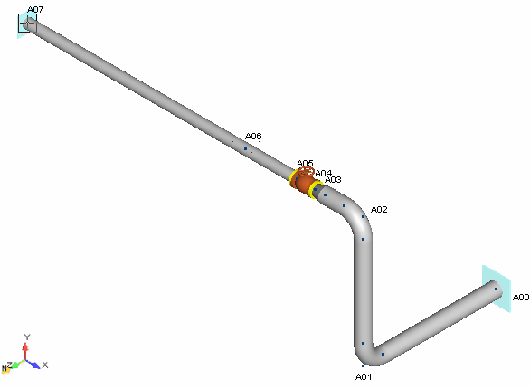
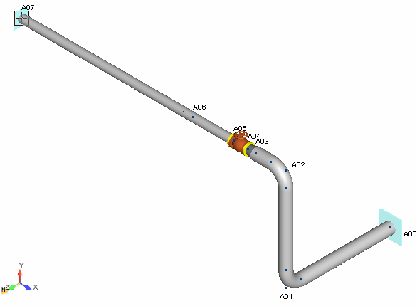

Routing Segment A
Now that the system and pipe properties have been defined, you can begin placing components on Segment
A. After completing this section, you will have created the section of the model shown below.

Now that the system and pipe properties have been defined, you can begin placing components on Segment
A. After completing this section, you will have created the section of the model shown below.
